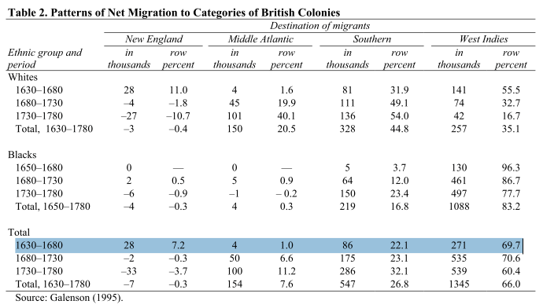
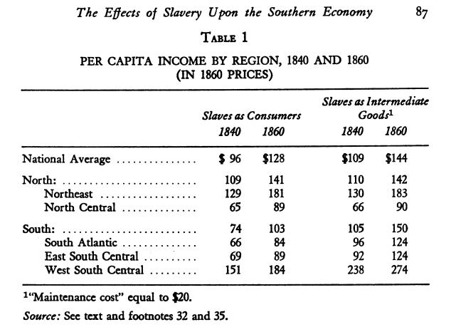

from Engerman & Sokoloff (2002 NBER):

1630-1780
total "migrants" to the British Colonies 2,039 K, 66% to the West Indies (sugar)
"free" migrants to British Colonies, 732 K, 35% to the West Indies
slave "migrants" to the British Colonies, 1,307 K, 83% to the West Indies
* punchline: many free migrants chose to avoid the West Indies ... slaves did not have the choice, and they were sent to the West Indies (death-traps).
from Engerman (1967 EEH),

n32 added
Texas to Easterlin (1961) & Gallman (1966); n35 on
maintenance cost